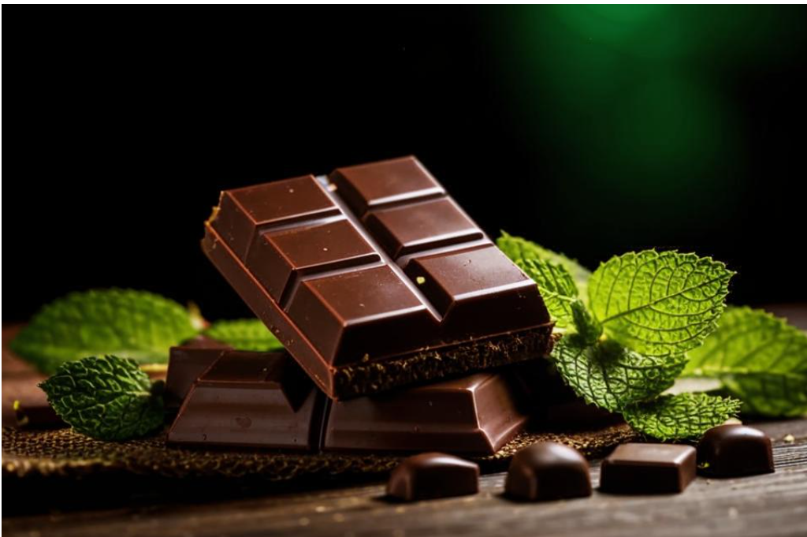

История шоколада
История шоколада насчитывает несколько тысячелетий и включает в себя множество культурных и экономических изменений. Вот основные этапы развития шоколада:
- Древние цивилизации (около 1500 года до н.э. – 1500 года н.э.)
- Цивилизации Центральной и Южной Америки: Какао-дерево (Theobroma cacao) было одомашнено ацтеками, майя и другими местными народами. Они использовали какао-бобы для приготовления напитков, таких как "xocolatl", который часто уделялся в ритуалах и был напитком элиты.
- Использование в ритуалах: Какао-бобы также использовались в качестве валюты и предлагались богам в рамках различных религиозных обрядов.
- Прибытие в Европу (16-17 века)
- Испанские колонизаторы: В 1528 году конкистадор Эрнандо Кортес привез какао в Испанию. Шоколад стал популярным среди испанской аристократии и быстро распространился по Европе.
- Сладкий вариант: Какао напиток новой моды в Европе был сладким и часто приправлялся корицей и ванилью.
- Промышленная революция (18-19 века)
- Технологические innovations: В 1828 году голландский химик Конрад ван Хаутен изобрел пресс для извлечения масла из какао-бобов, что привело к созданию порошка какао. Это облегчило производство шоколада и сделало его более доступным.
- Изобретение молочного шоколада: В 1875 году швейцарец Даниэль Петер совместно с Генри Нестле разработал первый молочный шоколад, который стал настоящей сенсацией.
- Современная эпоха (20 век – сегодня)
- Развитие шоколадной индустрии: В 20 веке многие компании, такие как Cadbury, Hershey's, Lindt, Mars и другие, начали производить различные виды шоколада, включая шоколадные конфеты, плитки и т.д.
- Изменение вкусов: Шоколад стал частью повседневной жизни, и его можно встретить в различных формах и вкусах. В последние десятилетия также наблюдается рост интереса к качественному, "крафт" шоколаду, произведенному небольшими заводами из высококачественных ингредиентов.
- Устойчивое производство: В последние годы акцент на ответственные методы производства и поддержание местных сообществ стал важной частью шоколадной индустрии. Существует множество инициатив, направленных на улучшение условий труда фермеров и устойчивое производство какао.
- Культурное значение
- Шоколад в культуре: Сегодня шоколад является неотъемлемой частью культуры многих стран, его используют в кулинарии, праздниках и подарках. Он также занимает важное место в современных праздниках, таких как день Святого Валентина и Пасха.
